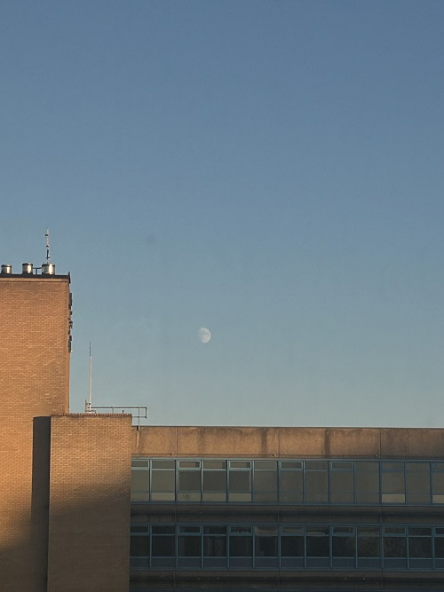

HTML learning notes
块级元素：以块的形式出现，出现在新行。<p>是一个块级元素。
内联元素：通常出现在块级元素中并环绕文档内容的一小部分，而非整个短话或一组内容。不会导致文本换行，通常与文本一起使用。<a>creates hyperlinks. <em> means italic font. <strong> means bold.
空元素：不是所有元素都拥有开始标签、内容和结束标签。一些元素只有一个标签，通常用来在此元素所在位置插入/嵌入一些东西。这些元素即空元素。例如<img src="xxxx" alt="xxxx">
属性：元素也可以拥有属性，属性包含元素的额外信息，这些信息不会出现在实际的内容中。<p class="xxxx"> 在这里class属性是一个识别名称，以后为元素设置样式信息时更加方便。如果一个元素具有多个属性，则每个属性之间必须由空格分隔。属性名称，后面跟着一个等于号。一个属性值，由一对引号（" "）引起来。
I would like to be a person who really enjoys every bit of life. After all, we only live once.
Photography is one of my passions; there's something magical about capturing fleeting moments and turning them into lasting memories.
So I will share some photos here. They are not masterpieces, of course, but they are my observations of my life.

I am Shiyi. You can also find me on Twitter. This webpage is used to record my life and study. Hope I could update something here everyday.